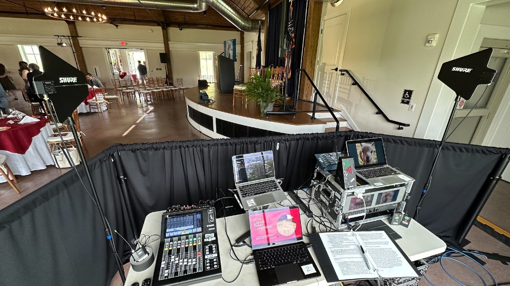
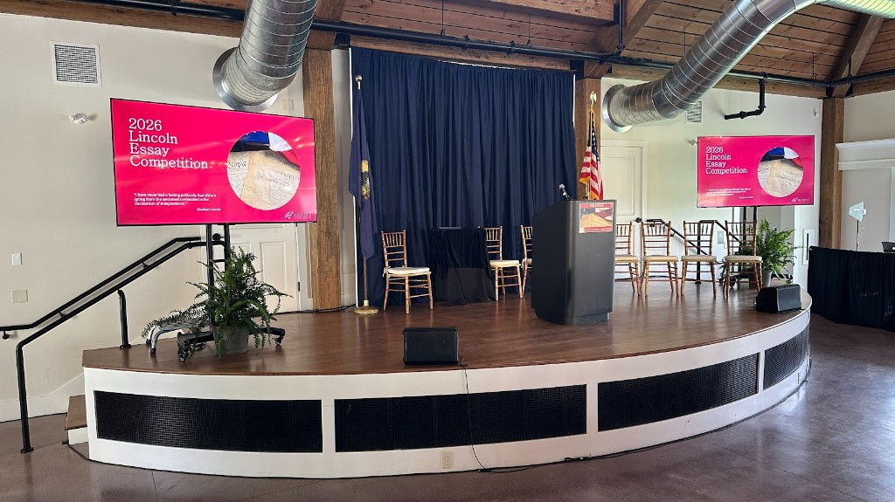
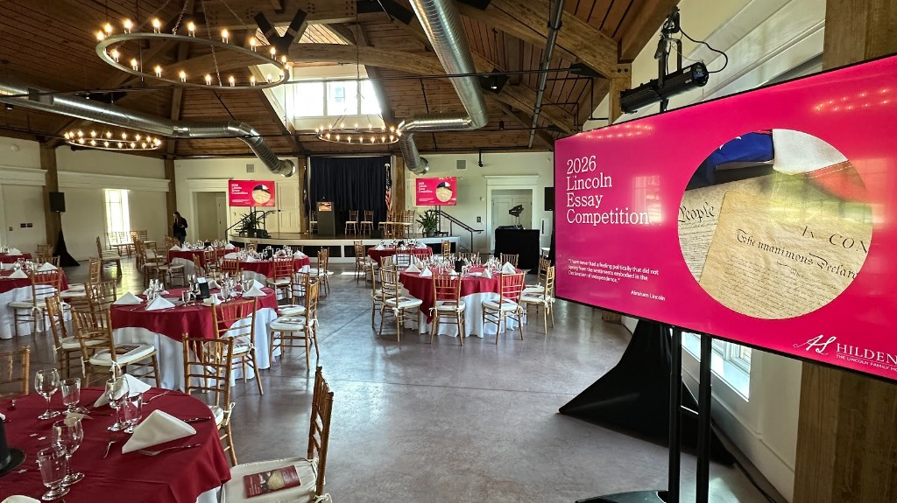

The 20th annual Lincoln Essay Competition. One hundred and forty guests. Every student voice heard clearly.
The 20th Annual Vermont 8th Grade Lincoln Essay Competition brought winners from across the state to Hildene’s Lincoln Hall on May 17, 2026 — a milestone edition honoring the 250th anniversary of the Declaration of Independence. Hildene invited Vermont’s eighth graders to reflect on the document’s enduring significance, receiving 147 essays statewide. First-, second-, and third-place winners were selected in four regions, along with three statewide honorable mentions. Roughly 140 guests — students, families, teachers, and community members — gathered for the celebratory awards luncheon.
The production was built around the award ceremony and student readings. Three large-format screens carried custom-designed presentation graphics for each regional award category, with looping branded content during the reception that transitioned cleanly into the ceremony sequence. We engineered the visual workflow around multiple simultaneous sources — laptop inputs, video playback, and live switching — so each segment transition was seamless. A custom looping slideshow welcomed guests as the room filled, and holding slides kept the displays polished between program segments. Nothing on screen ever looked accidental.
The sound system used a six-speaker distributed configuration — two mains, two center fills, two delays — so every seat heard the student presenters with equal clarity. Two LED ellipsoidal fixtures on stands provided stage lighting clean enough for both in-person viewing and broadcast capture. We coordinated directly with GNAT, the local community television station, providing a clean audio feed and production support for their recording of the full event. This is the kind of program that improves every year when the production stays consistent. We’ve built the infrastructure to make that possible.


A walkthrough of the room at full production: three large-format screens in position, six-speaker distributed audio, LED stage lighting dressed, and the space set for the 20th annual awards luncheon.